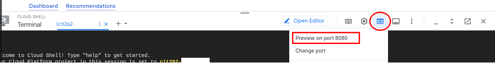

Prepare: Google Cloud Platform (GCP) & Docker
Overview
- Task: Complete the exercises in Google Cloud Platform (GCP) and take screenshots of your work.
- Purpose: Demonstrate your knowledge of GCP and other docker commands in a Linux environment.
Instructions
- Use Google Cloud Platform (GCP) and launch a docker container of your choice to complete the following tasks for each part of the assignment:
Assignment
Part 1: Connect to Google Cloud Platform (GCP)
Connect: to the Google Cloud Platform (GCP) cloud shell at https://console.cloud.google.com/
Login with your @byui.edu email if you are not already logged in.
From the terminal, launch a simple node express app as a container by running this command:
docker run -d --name bb -p8080:8080 blaineh7/bb:1.0Click on the "Web Preview" button (above the terminal) and click "Preview on Port 8080" and see the Bulletin Board Website
Next Steps
- Complete the commands and ask AI if you need help.
- Type your name in the scenario or terminal for identity confirmation.
- Take a screenshot of your work including date/time.
Part 2: Add Your Name to Bulletin Board Website
Back at the terminal, you can edit the index.html file within the container. To connect to the Linux Shell of the container/image, type:
docker exec -it bb bashTo use a text editor in the Linux shell of the image/container, update the linux packages to then install VIM:
apt updateapt install vimEdit the index.html webpage of the Bulletin Board using VIM(VI):
vi index.htmlModify line 20 "Welcome to the Bulletin Board" to be:
"Welcome to {enter your name here}'s Bulletin Board"
Substituting your name in place of {enter your name here}
- #Now you are using VIM or VI text editor. To edit the file:
- Type "i" to go into insert mode, which allows you to add text:
- If you have problems and need to save without quitting, type: ESC and then ":q!".
Press the 'i' key to enter insert mode.
Press the arrow keys on your keboard to move to line 20
Type yourname (put your actual name: ex: Bob Jones)
To exit "insert" mode in VIM, hit ESC on your keyboard.
Type ":wq". That will save (write) and quit.
To get out of the bash shell inside your image/container, type "exit" and press the "etner" key on your keyboard.
Next Steps
- Complete the commands and ask AI if you need help.
- Type your name in the scenario or terminal for identity confirmation.
- Take a screenshot of your work including date/time.
Submission
Submit your screenshots in one document by the due date.
Your image should look somewhat like this but with your name and your unique URL: